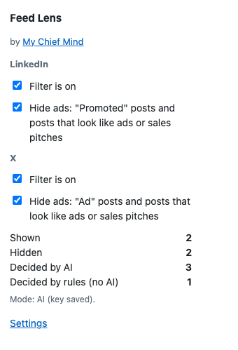
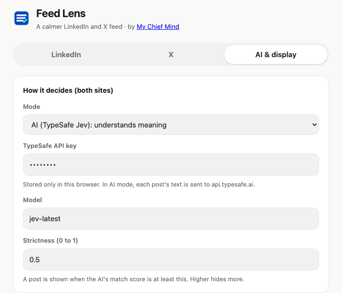
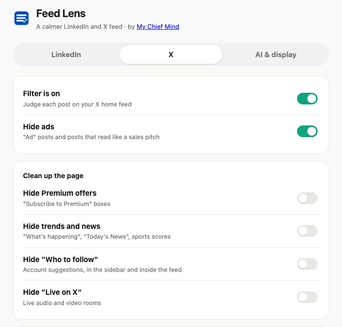

Test version from My Chief Mind. Takes about 3 minutes to install. Works in Google Chrome on a computer.
What it does: on your LinkedIn and X home feeds, it folds away ads and posts you don't care about. Each folded post gets a small bar with a Show button, so nothing is lost.
1
Unzip the file
Double-click feed-lens.zip. You get a folder named feed-lens.
Move that folder somewhere it can stay, like Documents. Don't delete it later: Chrome uses it.
2
Open the Chrome extensions page
In Chrome, type this in the address bar and press Enter: chrome://extensions
3
Turn on "Developer mode"
Top right corner of that page. Flip the switch on.
4
Click "Load unpacked"
A button at the top left. Pick the feed-lens folder from step 1 (the folder itself, not a file inside it). Click Select.
5
Pin it
Click the puzzle piece 🧩 at the top right of Chrome, then the pin 📌 next to Feed Lens. The blue icon with a green check now sits in your toolbar.

Click the icon for quick switches and today's counts.
6
Choose your settings
Click the blue icon, then Settings.
No AI key? Set Mode to Keywords only. Free, works right away.
Have a TypeSafe AI key? Keep Mode on AI and paste your own key. Get one at typesafe.ai.
The LinkedIn and X tabs each have their own I like and Hide lists. Edit them and click Save.
On the X tab you can also hide Premium offers, trends and news, "Who to follow" and "Live on X".

AI & display: mode, key and strictness.

X tab: page clean-up switches.
7
Open LinkedIn or X
Go to linkedin.com/feed or x.com/home. After a second, every post shows a small bar:
✅ Checked: shown to you, with the reason
🙈 Collapsed: folded away. Click Show to read it anyway
Good to know
The blue icon has two quick switches: Filter is on and Hide ads.
It only touches the LinkedIn home feed and the X home and Explore pages, nothing else.
In AI mode, the text of each post is sent to TypeSafe AI to decide. Nothing is posted, liked or sent on LinkedIn or X.
Chrome may show a "developer mode extensions" warning. That's normal for test versions.
New version? Replace the folder, then click ↻ on the extension card in chrome://extensions.
Remove it: click Remove on that same card.
Please tell us: posts that were folded but shouldn't be, ads that got through, anything confusing. A screenshot helps a lot.